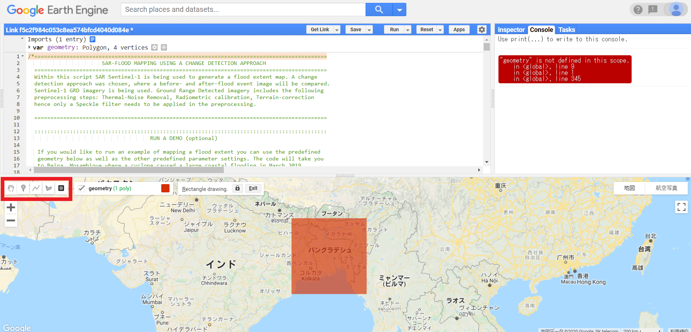
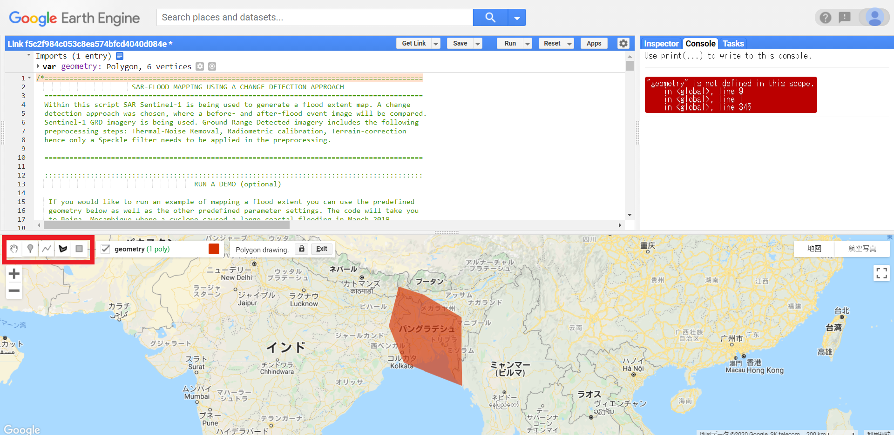

Chapter 1 まずはコードを利用して、洪水マップを作成してみましょう
まずは以下のコードを自分の研究対象に書き換えてみましょう。 (https://un-spider.org/advisory-support/recommended-practices/recommended-practice-google-earth-engine-flood-mapping/step-by-step)
対象エリア、対象期間は以下の方法で変更することができます。
1.1 対象エリア
①地図上のツールバーの一番右(■)をクリックする。研究対象エリアを四角形で囲むことができる。

GEE polygon1
②地図上のツールバーの右から2番目(5角形)をクリックする。研究対象エリアにピンを立て、必要最低限のエリアを選択することが可能。

GEE polygon2
1.2 対象期間
洪水前後の日時(期間)を設定する。
＊使用するデータはSentinel-1で6日周期であることに留意。
1.3 各種設定
基本的にここのコードは変更せずに使います。対象地域等により、必要がある場合のみ変更して利用してみてください。
var polarization = "VH"; /*or 'VV' SARセンサは縦方向の電磁波を送信します。縦波を単一平面(偏波)で送信することが可能です。一般的には、水平方向、垂直方向の2つが使われています。SARセンサは、受信した信号の偏波を選択することもできます。洪水マッピングでは、ほとんどの場合VHが好まれるようです。
VH:垂直送信、水平受信
VV:垂直送信、垂直受信
var pass_direction = "DESCENDING"; /* or 'ASCENDING'パスの方向の制約を昇順、降順、またはその両方で指定します。
var difference_threshold = 1.25;差分画像に適用される閾値を定義します。
var relative_orbit = 79; 研究領域の相対的な軌道がわかっていれば、フィルタリングをすることができます。